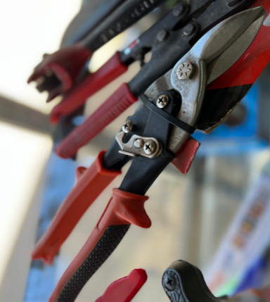
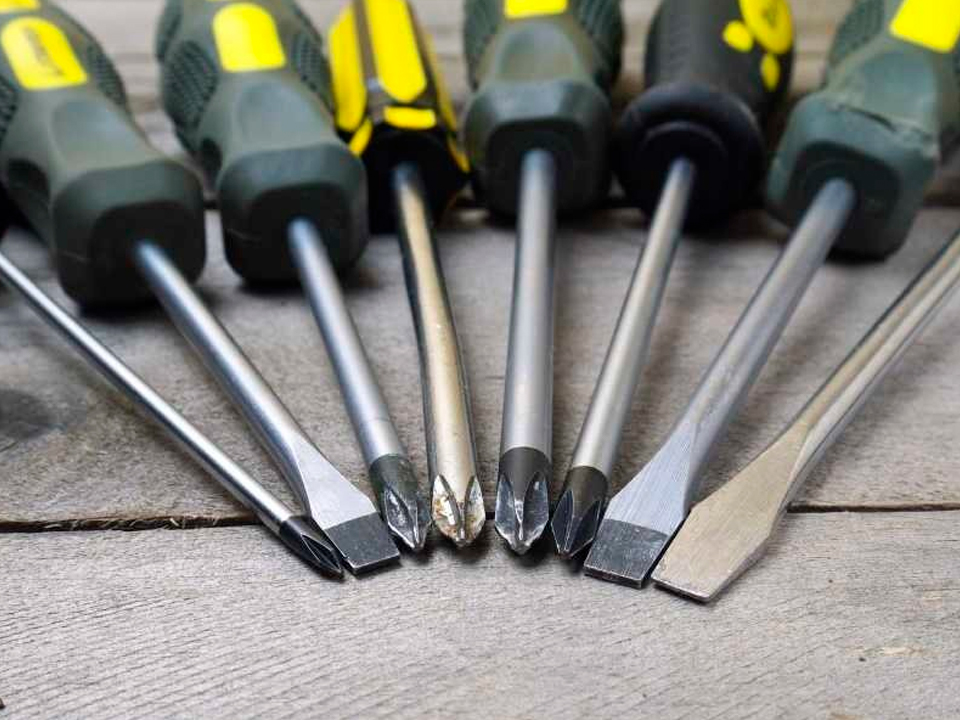

FERRETERIA ROBERTO
QUIENES SOMOS
Ferreteria Roberto nació allá por el año 1985, a penas Argentina retornaba a la democracia. Roberto Apollonio, su fundador, junto a su mujer Raquel Lagatta pusieron todos sus esfuerzos, energía, ganas, dinero y sueños en la Ferretería. Empezaba una nueva época de sus vidas. La Ferretería fue creciendo y ganando con cada año nuevos clientes, los cuales muchos de ellos se convirtieron en grandes amigos. Así la familia fue creciendo, clientes y proveedores, pasaron a formar parte de este gran sueño. Las mañanas se pasaban entre mates y novedades del barrio, siempre acompañados de buena musica. Musica de esa que te deja pensando por su letra y te derrite el corazón por su melodía. Por las tardes el folclore habitual, los chicos que salían del colegio en búsqueda de alguna herramienta o material para su próxima tarea, los trabajadores que volvían a sus hogares necesitaban el cosito que se le salió al botón del baño, o las señoras que querían instalar las nuevas cortinas que habían comprado, el barrio en su máximo esplendor. Además no podían faltar esos dos clientes o proveedores amigos que se pasaban la tarde entre cafecito y cafecito filosofando de la vida. En resumen, esto es lo que somos, Ferretería Roberto es ese lugar de encuentro en el barrio donde no solo se buscaba la solución al cosito del cosito sino también a los vericuetos de la vida.
OFERTAS
NUEVOS PRODUCTOS

Cortadora de Metales
Corta todo tipo de metales con aleación alumino

Colección Completa de Llaves Bremen
Oportunidad unica para completar tu tablero con las medidas que te falten.

Taladro Percutor Black And Decker
Lo mejor en taladros ya llego a tu barrio
LA HERRAMIENTA DE LA SEMANA

Destornilladores
Sumergete en el mundo de los destornilladores con este completo catalogo de todos los diseños que podras encontrar en nuestra tienda.
Ir a CatalogoUn destornillador (atornillador o desatornillador) es una herramienta que se utiliza para apretar y aflojar tornillos y otros elementos de máquinas que requieren poca fuerza de apriete y que generalmente son de diámetro pequeño. Un poco de historia: Los destornilladores documentados más antiguos fueron utilizados en Europa, en la Edad Media tardía. Probablemente fueron inventados en el siglo XV, en Alemania o Francia. Los nombres originales de la herramienta en alemán y francés fueron schraubendreher y tournevis, respectivamente. La primera documentación conocida de la herramienta se encuentra en el Housebook of Wolfegg Castle, un manuscrito medieval escrito entre 1475 y 1490. Destornillador de estrella. En 1933, Oregonian J.P. Thompson inventó un "tornillo empotrado cruciforme", pero no encontró promotores de su propuesta. Su invención languideció hasta que el ingeniero Henry Phillips, a quien le gustó la idea, compró los derechos de patente para el diseño de Thompson. Phillips reconoció las ventajas de la forma de cruz o estrella empotrada de la cabeza del tornillo: el destornillador encajaba en la cabeza de estos tornillos mejor que con un destornillador de cabeza plana y un tornillo ranurado; también permitía más fuerza de torsión con menos esfuerzo. Destornillador eléctrico. El destornillador eléctrico está provisto de un motor, que puede estar en el interior del mango. La punta del destornillador suele ser intercambiable y llevar accesorios para emplearlo con tuercas. Estos destornilladores disminuyen el tiempo de trabajo y pueden prevenir lesiones en la muñeca.
OUTLET
DISTRIBUIDORES OFICIALES
| Autopartes | Hogar | Herramientas | Pintureria | Sanitarios |
|---|---|---|---|---|
| Ford/ Chevrolet/ Puegeot | Atma/ Liliana/ Yelmo | Bremen/ Stanley/ Zeta | Sherwin Williams/ Alba/ Maderin | Ferrum/ Sogas/ Eterniy |